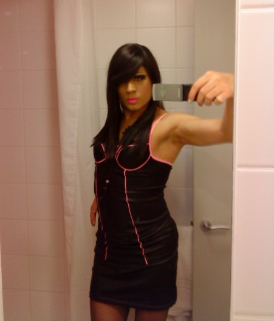

2nd July 2019
I can remember the first time I saw nylons worn by a girl, I should qualify it was not the first time I had seen tights but the first time it had made a strong impression on me, I was 10 or 11 and at school. I was captivated and engaged for reasons I could not explain. I wanted to get close to touch and feel, to satisfy my curiosity. Some drive or force within me compelled me to get them for myself to try and so one day I made this desire happen. It was a unique experience this first time I put on a pair of tights, an intoxicating feeling that was a feeling so strong I could not ignore or leave to just one instance. In the years following I would reflect; was it the look of the tights, the feel against my skin or how it made me feel in that instance. In all honesty it was and still is all of the above. Over the years I continued to indulge in wearing them in secret, maybe even under my male clothes. I often felt confused, guilty and alone, and on a number of occasions even though I was caught in the act by family members and embarrassed I was never deterred.
Through the years it developed to makeup, dresses, and wigs until taking on the full female person. I often questioned myself was this behaviour I had learnt wrong or was it predestined. I eventually began to rationalise that the problem did not lie with the fact that I enjoy wearing female clothing. The problem was the judgement I put upon myself, taking on the role of wider society and what people would think of me. I have come to realise that we cannot live by other people's rules and views on life, and so long as we are not violating the rights of anyone else we should strive to do what makes us happy as there are plenty of things that will not, so finding this feeling should be cherished and treated as a gift and nurtured and not thought of as a curse.
I have learnt more about myself in recent years and this lead to more than just happiness but to finding out who I am, as I believe my feminine spirit was always looking for ways to come to the surface and tights were just the seed that started my journey. I believe that in an effort to fit in, we deny parts of ourselves that are unique, and that is such as shame as this part of us however big or small needs to be expressed which is why I believe people go to such lengths to do so. We are all unique and are not supposed to be living the same lives as our neighbours. This something unique about you should be expressed and to borrow a phrase from Dr Wayne Dyer, “don’t die with your music still in you”. In other words don’t miss out on knowing and experiencing that thing or essence of you as I feel that life is a journey of self discovery.
My advice to those out there who maybe at the beginning stages of their journey of self discovery is this; in times of doubt or guilt watch closely your thoughts. When you hear that negative voice inside your head telling you that what you are doing is wrong, understand that what you are hearing is merely your conditioning. Beliefs you may have inherited or picked up through your life that do not serve you but only provide you with confusion and frustration. Say out loud to yourself, this negative feeling is not justified or wanted and I choose happiness over fear...
If you would like to donate to facilitate new content please click the button below
Contact Details: lifetogo@live.co.uk